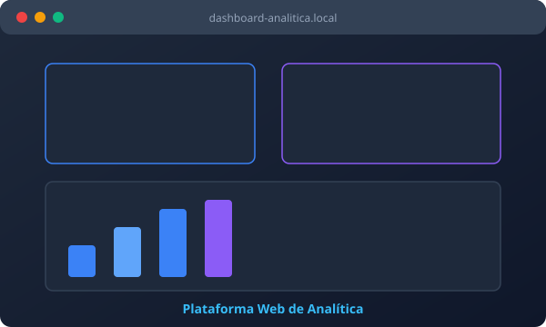

Pipelines ETL & Procesamiento Masivo (500+ GB)
Diseño e implementación de pipelines con IBM DataStage y scripts Unix Batch para transformar datos no estructurados en formatos analíticos reutilizables. Redujo los tiempos de preparación de datos en un 40% y optimizó consultas en Oracle para mejorar tiempos de reportes financieros en un 50%.
IBM DataStage
Oracle PL/SQL
Shell / Bash
Unix Batch